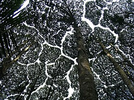

Crown Shyness
Crown shyness, also canopy disengagement canopy shyness,or inter-crown spacing is a phenomenon observed in some tree species, in which the crowns of fully stocked trees do not touch each other, forming a canopy width channel-like gaps. The phenomenon is most prevalent among trees of the same species, but also occurs between trees of different species There exist many hypotheses as to why crown shyness is an adaptive behavior, and research suggests that it might inhibit spread of leaf-eating insect larvae.
Possible Physiological Explanations
The exact physiological basis of crown shyness is uncertain. The phenomenon has been discussed in scientific literature since the 1920s. The variety of hypotheses and experimental results might suggest that there are multiple mechanisms across different species, an example of convergent evolution.
Species
The phenomenon is most prevalent among trees of the same species, but also occurs between trees of different species There exist many hypotheses as to why crown shyness is an adaptive behavior, and research suggests that it might inhibit spread of leaf-eating insect larvae.
Trees that display crown shyness patterns include:
Main Displays
- Species of Dryobalanops, including Dryobalanops
lanceolata and Dryobalanops aromatica (kapur)
Relates to smell of dammar.
- Some species of eucalypt
- Pinus contorta or lodgepole pine
- Avicennia germinans or black mangrove
- Schefflera pittieri
- Clusia alata
Known as gum trees.
Common near the ocean and rainforest.
More Displays
Shrug, or small tree.
13 different species.
Native to the tropics and South America.